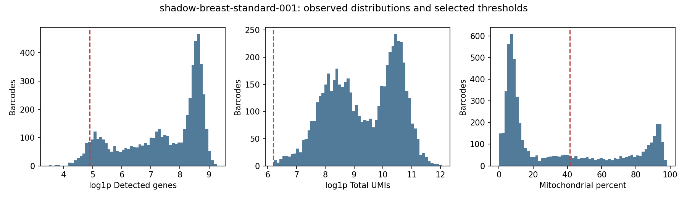
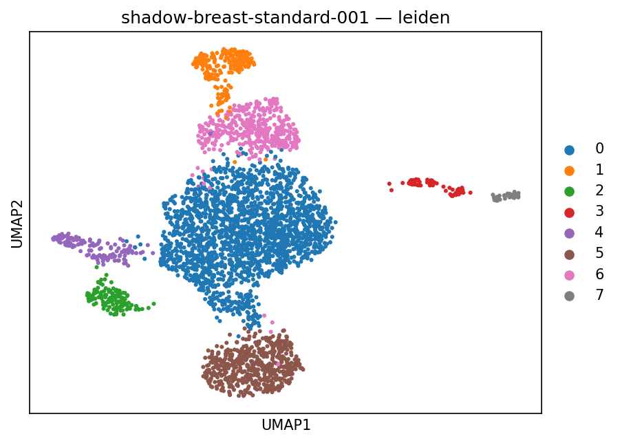
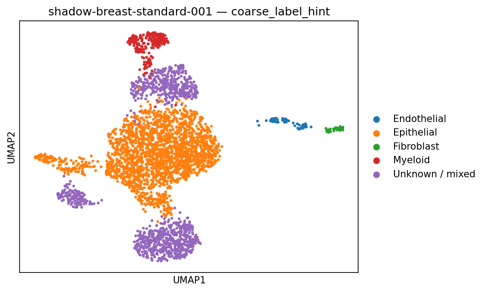
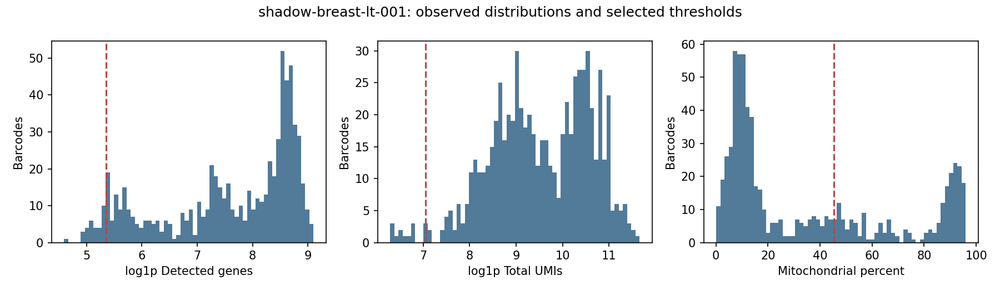
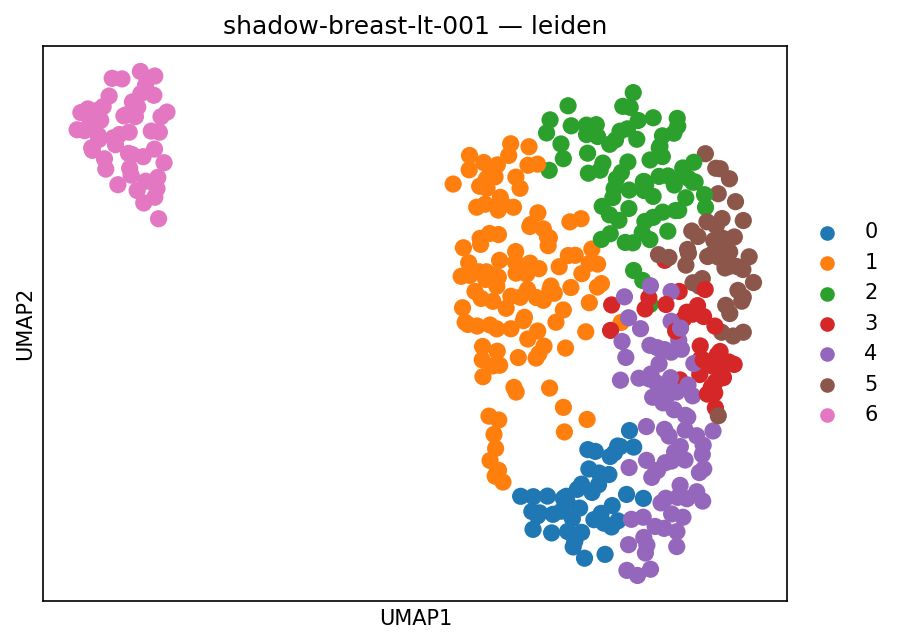
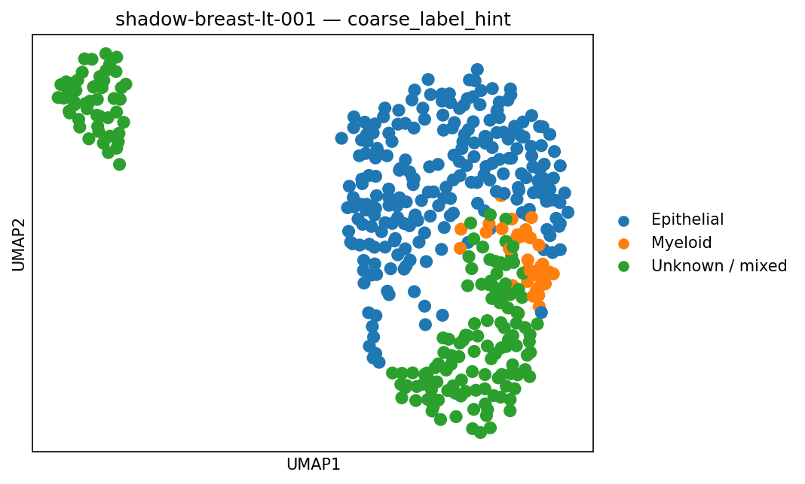
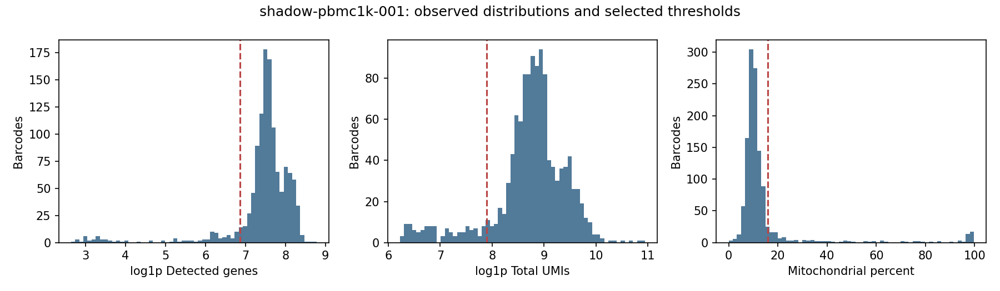
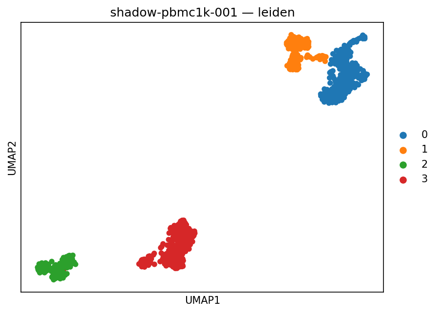
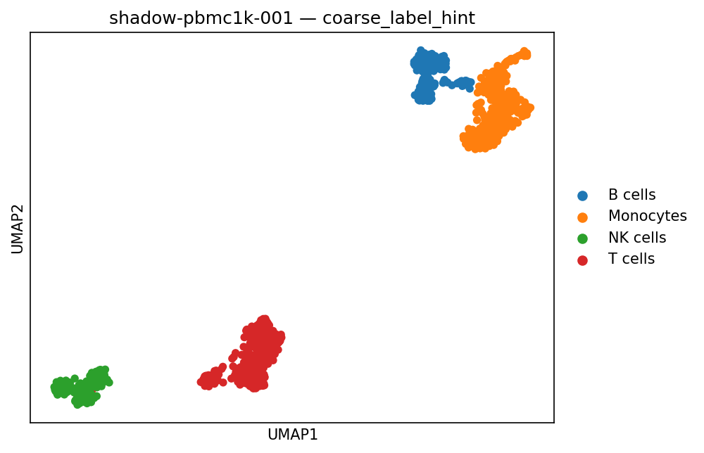

Public 10x controls executed through the patient research intake and QC path on Modal and private S3. No Diana data. Clinical readiness: no. All cases remain on provisional hold.
Two breast captures from one sorted-cell public donor; subtype and treatment unknown. PBMC is a separate technical control. Frozen retention screen: at least 70%; seed ARI screen: median pairwise ARI across ten Leiden seeds of at least 0.85. These are review screens, not biological truth.
Count integrity, biological validity, and patient admission are separate decisions. Full-barcode checkpoints remain intact. No integration, differential expression, or malignancy inference. This rehearsal does not validate upstream cell calling or FASTQ processing.
3,536 / 5,680 retained (62.3%); seed ARI 0.885 (median of 45 seed pairs; minimum 0.696; resolution 0.3 chosen by stability alone, sweep). Screens needing review: retention.
SoupX diagnostic status: estimated_review_required; candidate counts never selected for analysis. Unknown/mixed cluster hints: 30.8%.
The 1% fit is at the published default search boundary. Inspect the ambient model; this does not establish contamination is truly 1% or absent.
Earlier-run comparison: differences require inspection in the evidence JSON. The earlier method predates added review and custody fields; method identities differ.
Rules are counted in order to avoid counting overlapping flags twice.
| Decision | Barcodes |
|---|---|
| low_genes_first | 279 |
| low_umis_after_genes | 0 |
| mt_after_genes_and_umis | 1,682 |
| doublets_after_core | 183 |
| retained | 3,536 |



These hints are uncalibrated; they do not establish cell identity or malignancy. They differ from cluster annotations and never filter cells.
| Hint | Input | Retained | Retention |
|---|---|---|---|
| B cells | 8 | 5 | 62.5% |
| Endothelial | 59 | 50 | 84.7% |
| Epithelial | 2021 | 1868 | 92.4% |
| Fibroblast | 132 | 72 | 54.5% |
| Myeloid | 239 | 215 | 90.0% |
| Perivascular | 222 | 159 | 71.6% |
| Plasma cells | 189 | 153 | 81.0% |
| T / NK | 165 | 152 | 92.1% |
| Unknown / mixed | 2645 | 862 | 32.6% |
440 / 687 retained (64.0%); seed ARI 0.825 (median of 45 seed pairs; minimum 0.709; resolution 1.0 chosen by stability alone, sweep). Screens needing review: retention, seed_stability.
SoupX diagnostic status: estimated_review_required; candidate counts never selected for analysis. Unknown/mixed cluster hints: 38.9%.
The 1% fit is at the published default search boundary. Inspect the ambient model; this does not establish contamination is truly 1% or absent.
Earlier-run comparison: differences require inspection in the evidence JSON. The earlier method predates added review and custody fields; method identities differ.
Rules are counted in order to avoid counting overlapping flags twice.
| Decision | Barcodes |
|---|---|
| low_genes_first | 32 |
| low_umis_after_genes | 14 |
| mt_after_genes_and_umis | 187 |
| doublets_after_core | 14 |
| retained | 440 |



These hints are uncalibrated; they do not establish cell identity or malignancy. They differ from cluster annotations and never filter cells.
| Hint | Input | Retained | Retention |
|---|---|---|---|
| B cells | 1 | 0 | 0.0% |
| Endothelial | 7 | 7 | 100.0% |
| Epithelial | 234 | 216 | 92.3% |
| Fibroblast | 15 | 11 | 73.3% |
| Myeloid | 34 | 30 | 88.2% |
| Perivascular | 30 | 21 | 70.0% |
| Plasma cells | 24 | 18 | 75.0% |
| T / NK | 30 | 30 | 100.0% |
| Unknown / mixed | 312 | 107 | 34.3% |
1,012 / 1,222 retained (82.8%); seed ARI 0.998 (median of 45 seed pairs; minimum 0.988; resolution 0.2 chosen by stability alone, sweep). Screens needing review: none.
SoupX diagnostic status: estimated_review_required; candidate counts never selected for analysis. Unknown/mixed cluster hints: 0.0%.
The 1% fit is at the published default search boundary. Inspect the ambient model; this does not establish contamination is truly 1% or absent.
Earlier-run comparison: differences require inspection in the evidence JSON. The earlier method predates added review and custody fields; method identities differ.
Rules are counted in order to avoid counting overlapping flags twice.
| Decision | Barcodes |
|---|---|
| low_genes_first | 112 |
| low_umis_after_genes | 16 |
| mt_after_genes_and_umis | 54 |
| doublets_after_core | 28 |
| retained | 1,012 |



These hints are uncalibrated; they do not establish cell identity or malignancy. They differ from cluster annotations and never filter cells.
| Hint | Input | Retained | Retention |
|---|---|---|---|
| B cells | 189 | 169 | 89.4% |
| Dendritic cells | 47 | 38 | 80.9% |
| Monocytes | 319 | 289 | 90.6% |
| NK cells | 122 | 102 | 83.6% |
| Platelets | 19 | 9 | 47.4% |
| T cells | 412 | 367 | 89.1% |
| Unknown / mixed | 114 | 38 | 33.3% |
Review the breast compartment losses and clustering instability before interpreting cell proportions. Ambient and doublet estimates lack independent truth labels; marker margins are not probabilities.
Machine-readable evidence, comparisons and MT sensitivity · Public provenance · Scope and next steps